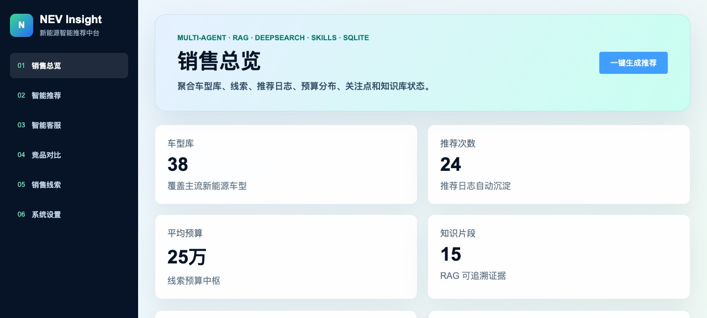
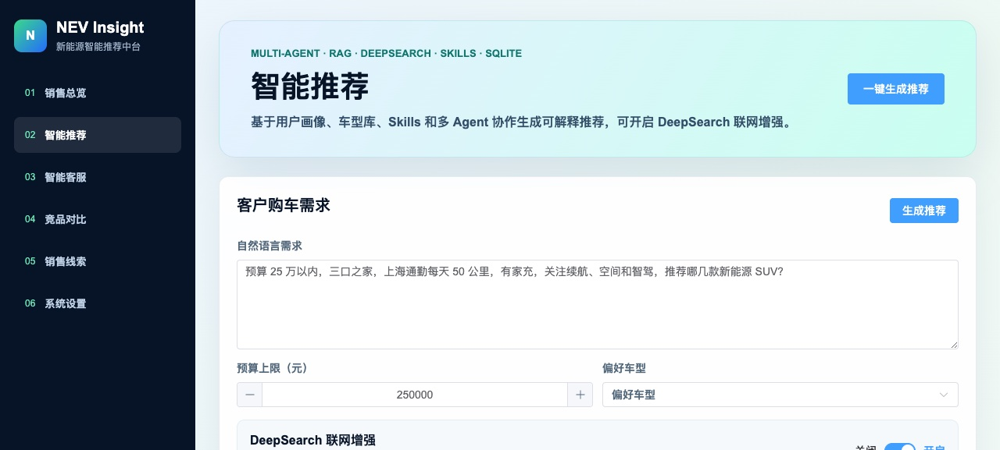
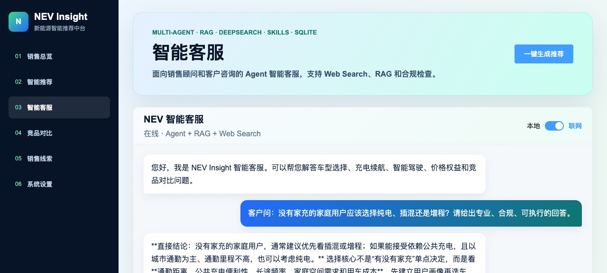
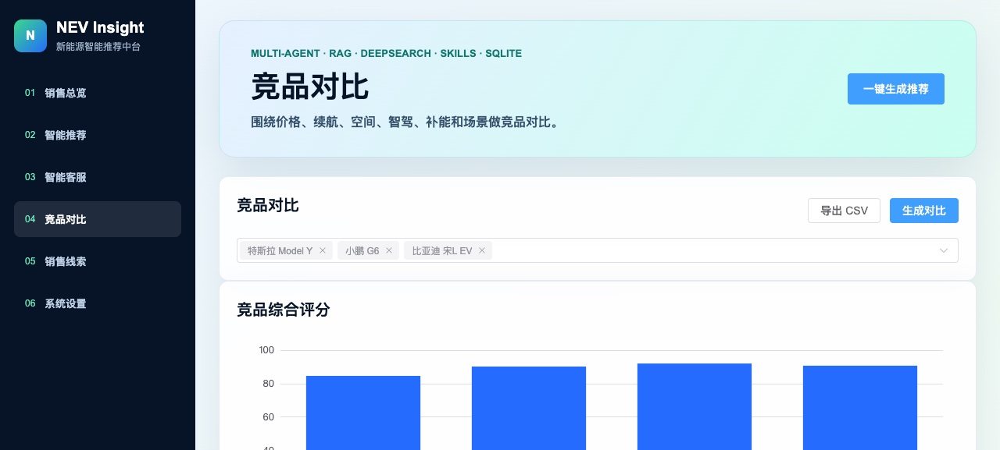
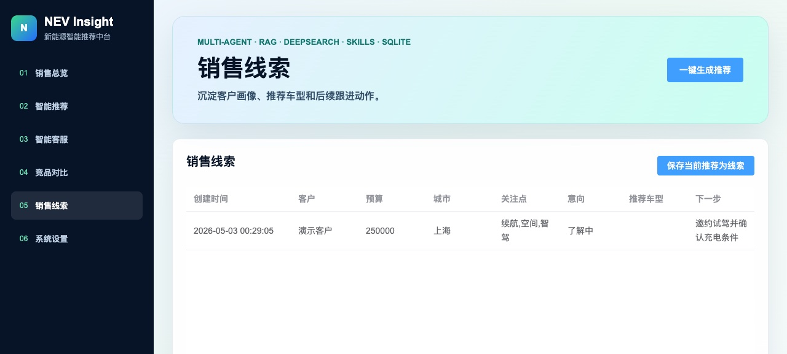
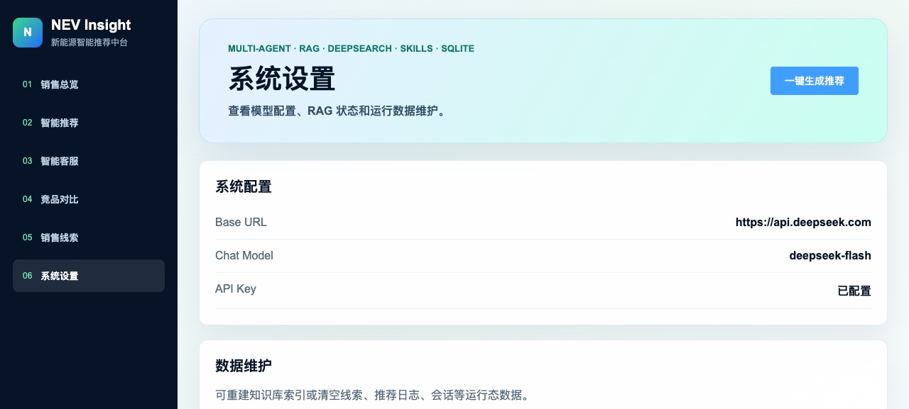

2026 · AI 应用 / 汽车销售
NEV Insight
门店顾问和客户聊完一次之后，往往只剩一张写着预算的便签。这个项目想解决的是：怎么把那次对话变成一份能接着往下走的推荐。
客户报一次预算、通勤距离和在意什么，系统给出五台候选车型、同价位竞品对比，以及每句结论的依据。顾问看到的不只是一个排序，而是「为什么是这几台」。
这是做什么的
面向新能源门店的销售工作台。左边是六个模块：销售总览、智能推荐、智能客服、竞品对比、销售线索、系统设置。顾问按真实接待流程走一遍，从接住需求到留下线索都在同一个界面里完成。
实际长什么样






为什么这样设计
-
01
推荐和客服拆成两个 Agent
排序要的是收敛，答疑要的是发散。放在同一个 Agent 里，模型会一边推荐一边给自己找理由。拆开之后，推荐只负责按画像排候选，客服只负责用检索结果回答，调用链在界面上看得见。
-
02
检索用混合而不是纯向量
「续航 700km 以上」「五座」「25 万以内」这类条件，向量检索给出的相似度很不可靠。所以检索走了向量加关键词两路，把硬条件交给关键词那一路兜住。具体怎么融合写在系统拆解里。
-
03
推荐完不能断掉
推荐结果如果只停在页面上，客户一走就断了。所以线索表把客户关注点、推荐车型和下一步动作写在同一行里，换人接手也不用重新问一遍——这也是门店真正在意的部分。
边界与还没做完的
「Top 5」是按客户画像排序出来的候选，不是经过验证的推荐准确率。我没有真实门店的成交数据，说不出「采用后成交率提升多少」这种话。
车型库和线索数据是演示数据，用来把流程跑通。接入真实车源需要另外做数据清洗和字段映射。
联网增强依赖外部搜索，回答质量受制于搜到的来源；搜不到时它会退回到知识库，而不是硬编一个答案。